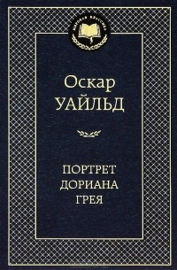

«Портрет Дориана Грея»

Год создания:
1890
Жанр:
Роман, философская литература
Количество страниц:
250
Возрастное ограничение:
16+
Описание произведения
"Портрет Дориана Грея" — самое знаменитое произведение Оскара Уайльда, единственный его роман, вызвавший в свое время шквал негативных оценок и тем не менее имевший невероятный успех.
Главный герой романа, красавец Дориан, — фигура двойственная, неоднозначная. Тонкий эстет и романтик становится безжалостным преступником. Попытка сохранить свою необычайную красоту и молодость оборачивается провалом. Вместо героя стареет его портрет — но это не может продолжаться вечно, и смерть Дориана расставляет все по своим местам.
Роман Оскара Уайльда продолжает быть очень актуальным и сегодня — разве погоня за вечной молодостью порой не оборачивается потерей своего истинного лица?
Цитаты из произведения
Преданные сердца знают любовь лишь поверхностно, непостоянным же доступна вся глубина ее трагизма.
Самые большие глупости мы совершаем из самых благородных побуждений
В самобичевании есть определенное наслаждение. Когда мы виним себя, то чувствуем, что никто другой не вправе нас обвинять. Отпущение грехов дарует не священник, а признание вины. Закончив письмо, Дориан почувствовал себя прощенным.
Вероятно, никогда человек не держится столь непринужденно, как если ему приходится притворяться.
Общее время перевода
| Подготовка к переводу | Создание текста перевода | Редактирование перевода и корректировка ошибок | |
|---|---|---|---|
| Ожидаемое время | 7 дня | 35 дней | 7 дней |
| Затраченное время | 5 дня | 20 дней | 7 дней |